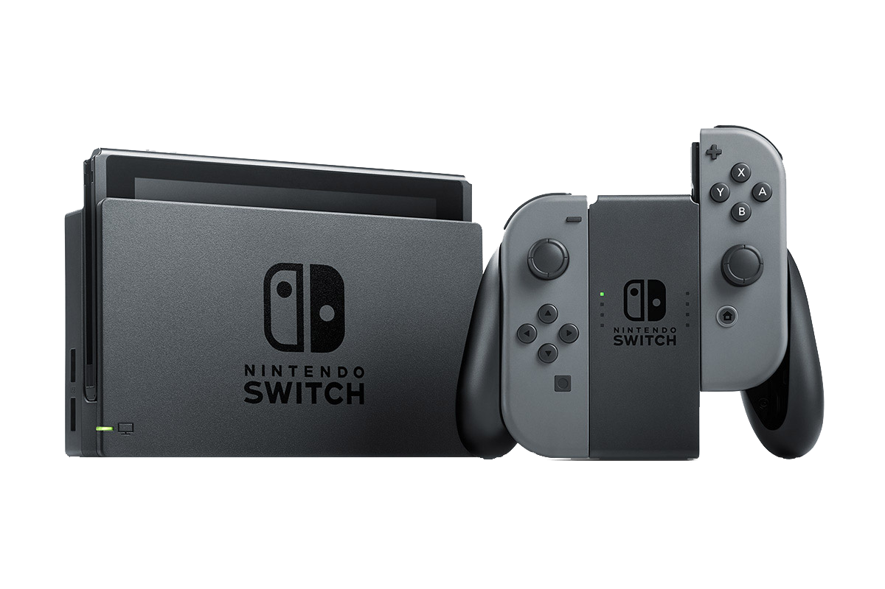
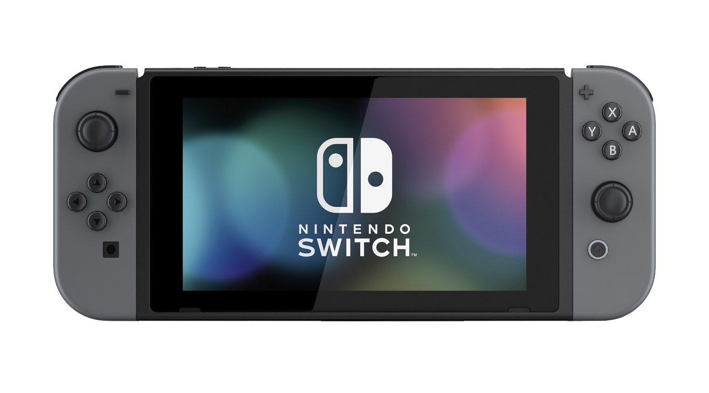
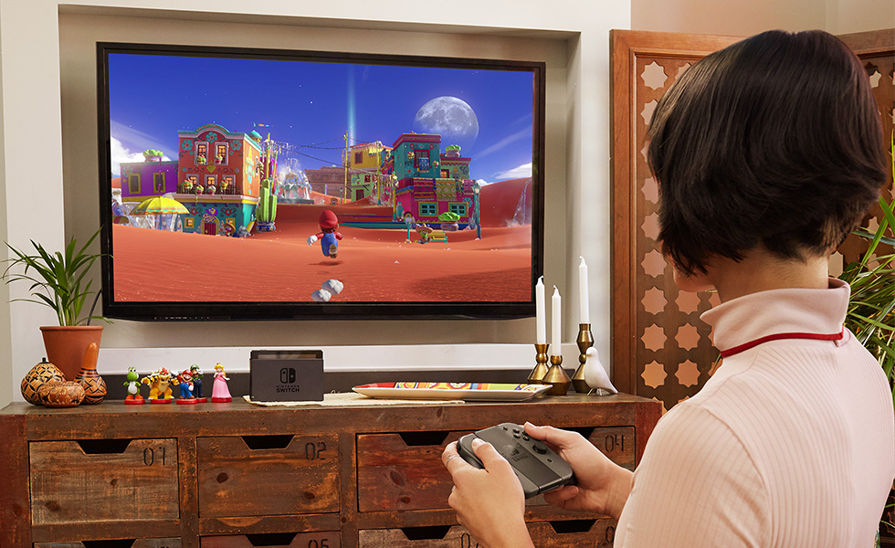
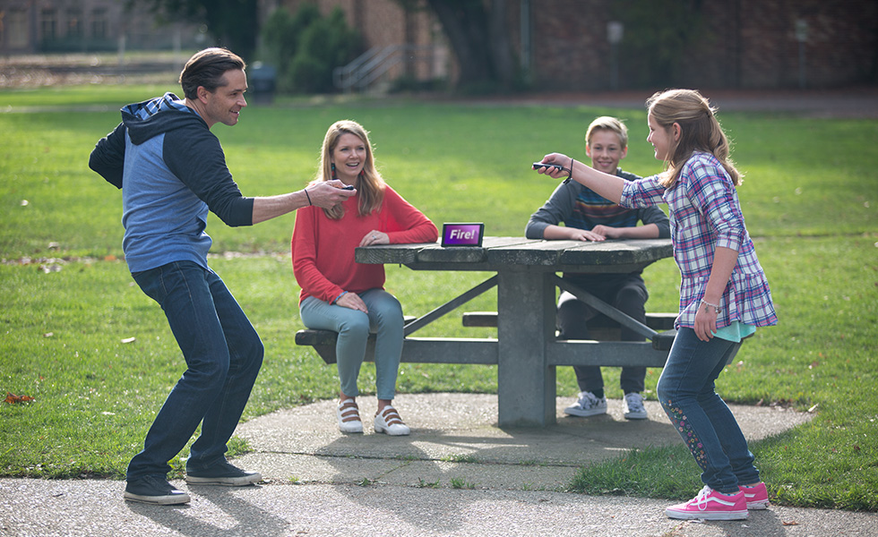
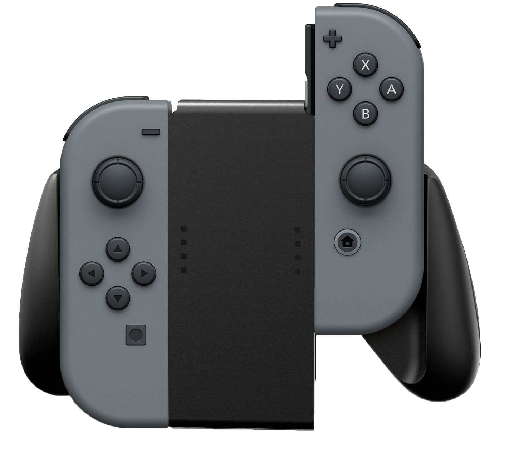
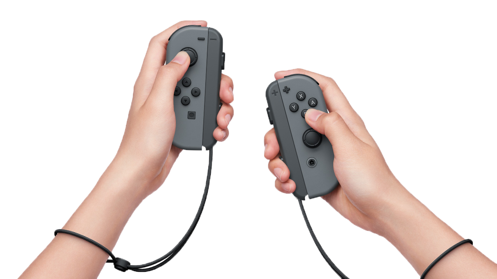
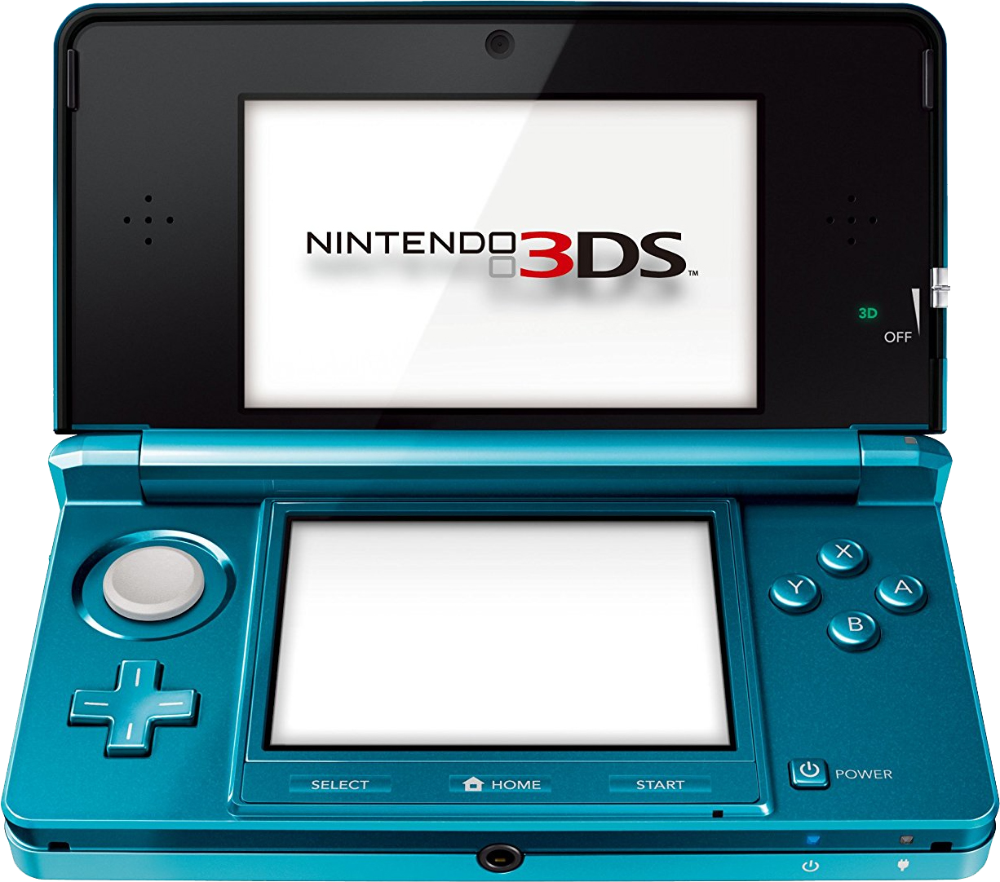
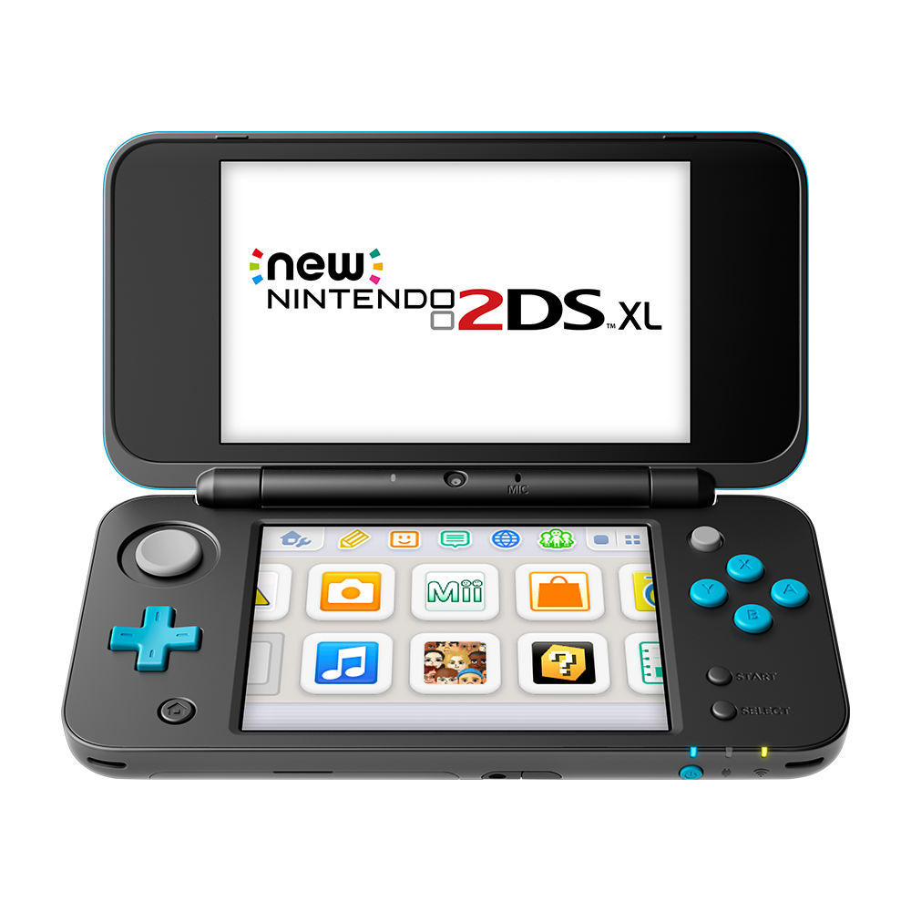
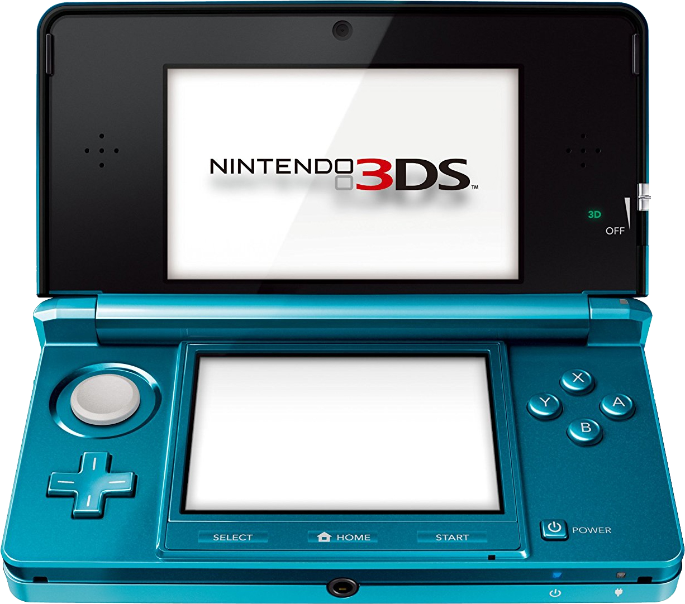
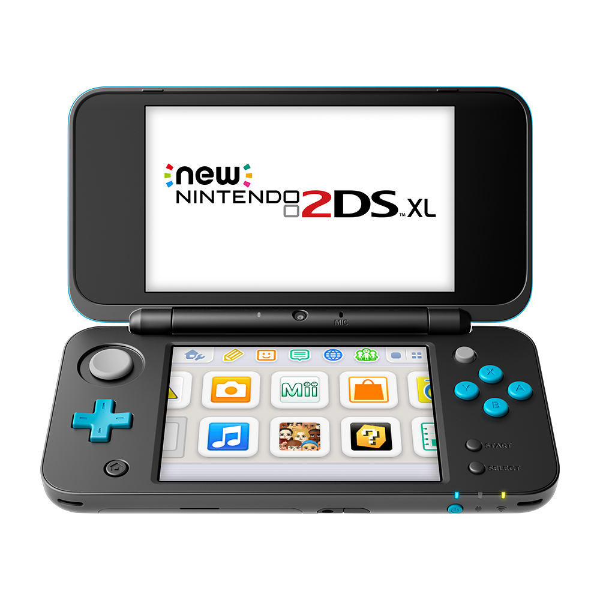

NINTENDO SWITCH

O Nintendo Switch é feito para se adaptar à sua vida, se transformando de console caseiro a sistema portátil em um piscar de olhos.Assim, você ganha mais tempo e formas de jogar os jogos que voce ama, da forma que você gosta.
 JOGUE ONDE QUISER!
MODOS DE JOGAR
Conecte seu Nintendo Switch na Dock e jogue em HD! Se estiver saindo, conecte os Joy-Cons e divirta-se onde quiser.


JOY-CONS
Um controle ou dois, vertical ou horizontal, controles de movimento ou botões... Os Joy-Con e o Nintendo Switch te dão flexibilidade total de gameplay.  
 


